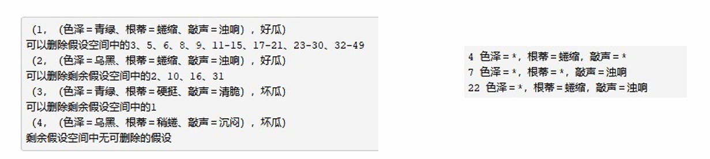
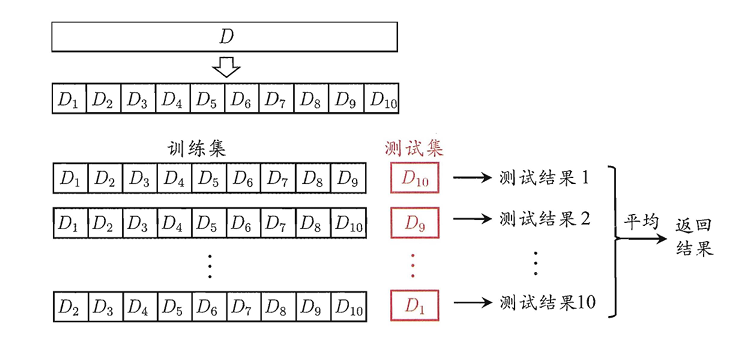

Chapter2 模型的评估与选择
经验误差与过拟合
模型选择的目标是泛化误差。
错误率：
错分样本的占比。
误差：
样本真实输出与预测输出之间的差异。分为训练（经验）误差和测试误差。
过拟合：
把训练样本学习得太好，将训练样本本身的特点当做所有样本的一般性质，导致泛化性能下降。
解决方法：
- 加入正则项
- early stopping
- 增大训练数据体量
欠拟合：
对训练样本的一般性质尚未学好。
解决方法：
- 决策树：拓展分支
- 神经网络：增加训练轮数

评估方法
对于一个含有$m$个样例的数据集$D$，需要进行适当的处理，产生出训练集$S$和测试集$D$。
留出法（hold-out）
直接将数据集分成互斥的训练集和测试集，两个集合尽可能保持数据分布的一致性。
分层采样，保持类别比例一致。
一般若干次随机划分，重复实验取平均值。
训练/测试样本比例通常为2:1~4:1。
交叉验证（cross-validation）
将数据集分层采样划分$k$个大小相似的互斥子集，每次用$k-1$个子集作为训练集，剩下一个子集作为测试集，最终返回$k$个测试结果的均值。
$k$最常用的取值是10。

同样的，由于划分存在多种方式，为了减小因样本划分不同而引入的差别，$k$折交叉验证通常随即使用不同的划分重复$p$次，最终的评估结果是这$p$次$k$折交叉验证结果的均值。
Definition
留一法(LOO)：
交叉验证的极端，一个数据就是一个子集（$m=k$），不受随机样本划分方式的影响。
自助法（bootstrapping）
对于包含$m$个样本的数据集$D$，从$D$中有放回地随机抽取$m$个样本。被抽中的样本组成训练集（被抽中几次，在训练中就有几份拷贝），一次都没被抽中的组成测试集。
样本在$m$次采样中始终不被采到的概率是$(1-\frac{1}{m})^m$，取极限得到：
$$\lim\limits_{m\rightarrow\infty}(1-\frac{1}{m})^m=\frac{1}{e}\approx 0.368$$
Note
数据集小，难以划分训练集和测试集时，用自助法； 数据量足够，用留出法或交叉验证。
调参（parameter tuning）
使用验证集调参。
性能度量
在预测任务中，要评估学习器$f$的性能，就要把学习器预测结果$f(x)$与真实标记$y$进行比较。
回归任务最常用的性能度量是均方误差：
$$E(f;D)=\frac{1}{m}\sum\limits_{i=1}^m(f(x_i)-y_i)^2$$
分类任务最常用的性能度量是错误率和精度：
- 错误率：分错样本占样本总数的比例
- 精度：分对样本占样本总数的比例
混淆矩阵：
| $~$ | 预测结果是正例 | 预测结果是反例 |
|---|---|---|
| 真实情况是正例 | $TP$（真正例） | $FN$（假反例） |
| 真实情况是反例 | $FP$（假正例） | $TN$（真反例） |
查准率：$P=\frac{TP}{TP+FP}$
查全率：$R=\frac{TP}{TP+FN}$
P-R曲线
P-R曲线适用于二分类问题，绘制步骤如下：
- 分类模型为每个样本输出一个属于正例的概率（置信度）
- 将所有样本按照概率从高到低排序
- 选取每个样本的概率作为分类阈值（例如某个样本预测为正例的概率是0.9，则以0.9作为分类阈值）
- 在每个阈值下，重新划分正例和反例，计算相应的查准率和查全率
- 以查全率为横坐标，查准率为纵坐标绘制曲线

平衡点是曲线上查准率=查全率时的取值。
F1度量
F1度量比平衡点更常用，只有查准率和查全率都高时，F1才高。F1越高，模型性能越好。
$$F_1=\frac{2\times P\times R}{P+R}=\frac{2\times TP}{\text{样例总数}+TP-TN}$$
Note
同样的，二分类的分类阈值是人为设定的，不同的阈值对应的F1也不同，所以我们往往会去寻找最佳的阈值，使得F1最大化。
比F1更一般的形式：
$$F_{\beta}=\frac{(1+\beta^2)\times P\times R}{(\beta^2\times P)+R}$$
- $\beta=1$：标准F1
- $\beta>1$：更看重查全率（逃犯信息检索）
- $\beta<1$：更看重查准率（商品推荐系统）
ROC曲线
ROC曲线以假正例率（$\frac{FP}{FP+TN}$）为横坐标，真正例率（$\frac{TP}{TP+FN}$，即查全率）为纵坐标绘制曲线。
ROC曲线的绘制和P-R曲线有不同之处，采用走格子的方法：
- 设$m^+$为真实的正例数，$m^-$为真实的反例数
- 分类模型为每个样本输出一个属于正例的概率（置信度）
- 将所有样本按照概率从高到低排序
- 从原点$(0,0)$开始，遍历排序后的样本，如果当前样本为真实的正例，则向上移动$\frac{1}{m^+}$，否则向右移动$\frac{1}{m^-}$，直到遍历完所有样本

事实上，图上的每个$(x_i,y_i)$也对应了在某个分类阈值下的假正例率和真正例率，这个分类阈值就是排序中第$i$个样本被预测为正例的概率。
若某个学习器的ROC曲线被另一个学习器的ROC曲线包住，则后者性能优于前者；或者更直观地，根据ROC曲线下的面积AUC值（area under curve） 来比较，AUC值越大，模型性能越好。
$$\text{AUC}\approx\sum\limits_{i=1}^{m-1}\frac{(x_{i+1}-x_i)(y_i+y_{i+1})}{2}\text{ （竖着划分成梯形）}$$
Note
AUC值衡量的是模型是否把正例排在反例前面（排序质量），可以被形式化为随机选一个正例和一个反例，模型预测正例得分高于反例的概率。
代价敏感错误率
现实任务中不同类型的错误所造成的后果可能不同，为了权衡不同类型错误所造成的不同损失，为错误赋予非均等代价。
例如，在癌症检测中，假阴性（将患病者误诊为健康者）的代价远高于假阳性（将健康者误诊为患病者）。
因此，我们可以使用代价矩阵，其中$cost_{ij}$表示将第$i$类样本预测为第$j$类样本所付出的代价。
在非均等代价下，我们不再最小化错误次数，而是最小化总体代价，对应代价敏感错误率的计算公式为：
$$E(f;D;cost)=\frac{1}{m}(\sum\limits_{x_i\in D^+}I[f(x_i)\neq y_i]\cdot cost_{10}+\sum\limits_{x_i\in D^-}I[f(x_i)\neq y_i]\cdot cost_{01})$$
比较检验
假设检验为学习器性能比较提供了重要依据。基于其结果我们可以推断出若在测试集上学习器A比B好，则A的泛化性能是否统计意义上由于B，以及这个结论的把握有多大。
假设一个学习器的测试错误率为$\hat{\epsilon}$，测试样本从样本总体分布中独立采样而来，测试样本数量为$m$。这个学习器对这$m$个样本进行预测的结果是$\hat{\epsilon}\times m$个样本被误分类。
现在我们想知道，如果学习器的泛化错误率为$\epsilon$，那么在这$m$个样本上恰好犯错$\hat{\epsilon}\times m$次的概率是多少。
事实上，这是一个二项分布的问题，概率为
$$P(\hat{\epsilon};\epsilon)=C_{m}^{\hat{\epsilon}\times m}\cdot\epsilon^{\hat{\epsilon}\times m}\cdot(1-\epsilon)^{(1-\hat{\epsilon})\times m}$$
这也表达了在包含$m$个样本的测试集上，泛化错误率为$\epsilon$的学习器被测得测试错误率为$\hat{\epsilon}$的概率。
Warning
偏难，待补充
二项检验
T-检验
交叉验证 T-检验
偏差与方差
对测试样本$x$：
- $y_D$：$x$在数据集中的标记（例如人工打上的标记，可能出错）
- $y$：$x$的真实标记
- $f(x;D)$：训练集$D$上学得的模型$f$在$x$上的预测标记
以回归任务为例，学习算法的期望为：
$$\overline{f}(x)=\mathbb{E}_D[f(x;D)]$$
这个式子表示的就是：如果我们用不同的训练集$D$来训练模型，然后对同一个样本$x$做预测，平均预测结果是多少。
此时，不同训练集产生的方差为
$$var(x)=\mathbb{E}_D[(f(x;D)-\overline{f}(x))^2]$$
噪声为
$$\varepsilon^2=\mathbb{E}_D[(y_D-y)^2]$$
期望输出与真实标记的差别称为偏差，即
$$bias^2(x)=(\overline{f}(x)-y)^2$$
Note
偏差与方差可以用打靶来举例。
偏差指的是你平均射中的位置与靶心之间的距离。
方差指的是你每次射击的位置的分散程度。
现在，我们假设噪声期望为0（$\mathbb{E}_D[y_D-y]=0$），对泛化误差进行分解：
$E(f;D)=\mathbb{E}_D[(f(x;D)-y_D)^2]$
$=\mathbb{E}_D[(f(x;D)-\overline{f}(x)+\overline{f}(x)-y_D)^2]$
$=\mathbb{E}_D[(f(x;D)-\overline{f}(x))^2]+(\overline{f}(x)-y_D)^2+\mathbb{E}_D[2(f(x;D)-\overline{f}(x))(\overline{f}(x)-y_D)]$
$=\mathbb{E}_D[(f(x;D)-\overline{f}(x))^2]+\mathbb{E}_D[(\overline{f}(x)-y_D)^2]$
$=\mathbb{E}_D[(f(x;D)-\overline{f}(x))^2]+\mathbb{E}_D[(\overline{f}(x)-y+y-y_D)^2]$
$=\mathbb{E}_D[(f(x;D)-\overline{f}(x))^2]+\mathbb{E}_D[(\overline{f}(x)-y)^2]+\mathbb{E}_D[(y-y_D)^2]+2\mathbb{E}_D[(\overline{f}(x)-y)(y-y_D)]$
$=\mathbb{E}_D[(f(x;D)-\overline{f}(x))^2]+(\overline{f}(x)-y)^2+\mathbb{E}_D[(y-y_D)^2]$
Note
为什么$\mathbb{E}_D[2(f(x;D)-\overline{f}(x))(\overline{f}(x)-y_D)]$是0？
设$A=f(x;D)-\overline{f}(x)$，$B=\overline{f}(x)-y_D$，则$A$和$B$独立，因为$A$的随机性来自于训练集的不同，$B$的随机性来自于标记的噪声，二者的随机性来源不同。（但无法从数学上严格证明）
因此，上式可化为：$2\mathbb{E}_D[A]\mathbb{E}_D[B]$
又有：$\mathbb{E}_D[A]=\mathbb{E}_D[f(x;D)]-\overline{f}(x)=0$
因此上式为0。
为什么$\mathbb{E}_D[(\overline{f}(x)-y)(y-y_D)]$是0？
同理，但此时期望为0是因为假设噪声期望为0。
综上：
$$E(f;D)=var(x)+bias^2(x)+\varepsilon^2$$
偏差-方差窘境：
训练不足时，学习器拟合能力弱，此时偏差主导泛化错误率；
随着训练程度加深，学习器拟合能力逐渐增强，方差逐渐主导泛化错误率。